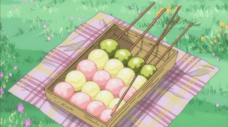

Dango

I do not know where anime is this from :(
Do you know that...
- There are different varieties of Dango available, but one of the most popular ones is the Mitarashi Dango.
- Dango is mostly eaten during springtime
- Dango is often paired with tea or eaten as a dessert
Ingredients
- 160g joshinko non-glutinous rice flour
- 40g shiratamako glutinous rice flour
- 60g sugar
- 200ml hot water
- 1 tsp matcha green tea powder
- red food colouring
Method
- Mix together the joshinko non-glutinous rice flour, shiratamako glutinous rice flour and sugar. Add the hot
water little by little, mixing well until the mixture takes on the consistency of an earlobe. This is the
traditional way to describe the perfect texture for your dango mixture.
- Cover the bowl you mixed your dango mixture in and microwave for 3 minutes. Using damp hands or
alternatively a dampened pestle from a suribachi, knead the dough.
- Divide the dough into thirds. Add the food colouring to one third and the matcha to another third. The last
one will be left as is. If the matcha powder is too hard to combine, add a little water to the matcha powder
to make a paste before mixing in.
- Dampen your hands again and roll the dough into 6 evenly sized balls for each colour. Thread one of each
colour onto a bamboo skewer and serve as a sweet treat.
Return to home page